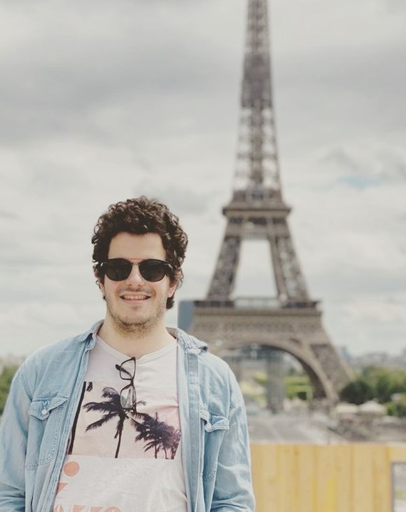

Computational Neuroscientist, Postdoctoral Researcher
NeuroPRISM Lab - Northeastern University
Ph.D. in Computer Science/Applied Mathematics from LMF - Paris-Saclay University
(ranked #1 globally in Mathematics by ARWU 2020-2023)
A Quasi-Stationary Distribution Bound for Fault Analysis in Gene Regulatory Networks with M. Fuegger, and T. Nowak.
https://www.biorxiv.org/content/10.1101/2025.10.21.683707v1
MobsPy: A programming language for biochemical reaction networks with G. Prakash, M. Fuegger, and T. Nowak, 2025.
PLOS Computational Biology
https://doi.org/10.1371/journal.pcbi.1013024
An Allee-based Distributed Algorithm for Microbial Whole-Cell Sensors with M. Fuegger, and T. Nowak, 2024.
npj Systems Biology and Applications
https://www.nature.com/articles/s41540-024-00363-3
MobsPy: A Meta-Species Language for Chemical Reaction Networks with M. Fuegger, and G. Prakash, and T. Nowak, 2022.
Presented at CMSB 2022 (September 2022)
https://doi.org/10.1007/978-3-031-15034-0_14
Stochastic Multi-Distribution Modeling of Inter-Contact Times with T. Nowak, 2022.
Presented at ICOIN 2022 (January 2022)
https://doi.org/10.1109/ICOIN53446.2022.9687207
Pixel Attack for CAPTCHA Construction with R. Arthur, 2022.
Presented at FICC 2022 (March 2022)
https://link.springer.com/chapter/10.1007/978-3-030-98015-3_50
A MATLAB toolbox for statistical power analysis in neuroimaging
The Incremental-Cluster Threshold Free Cluster Enhancement
PRISME
This project consists of the implementation of a new algorithm for statistical empirical power analysis with an optimized architecture for the comparison of multiple statistical inference procedures.
- (2024 - Ongoing)
https://github.com/neuroprismlab/Power_Calculator
Greener Webscraper
This project consisted of a bot that automates the search for information about companies from survey responses. It was coded for and used by the Greener consulting company in Brazil.
- 2021
(Git-Hub not publicly available)
MobsPy
This repository contains the Meta-Species Oriented Biosystem Syntax.
- (2021 - Ongoing)
https://github.com/ROBACON/mobspy
Event Recommendation Website
In this project, I developed a TF-IDF cosine similarity algorithm to tackle the cold-start recommendation challenge.
- 2020
https://github.com/CHUht/Hangout_Recommendations_Front_End
Adversarial Captchas
This project contains a neural network to generate Adversarial Captchas with the One Pixel Attack.
- 2020
https://github.com/fabriciocravo/MNIST_Adversarial_Captchas
Collaborative Online TCP-IP Whiteboard
This project consists of a collaborative whiteboard where multiple people can draw together online.
- 2019
https://github.com/fabriciocravo/Whiteboard
Portuguese (Native) • English (Fluent) • French (Fluent) • Spanish (Basic)
Fabricio Cravo
NeuroPRISM Lab
Northeastern University
Boston, MA
USA
Email: f dot cravogomes [at] northeastern dot edu
Website: fabriciocravo.github.io